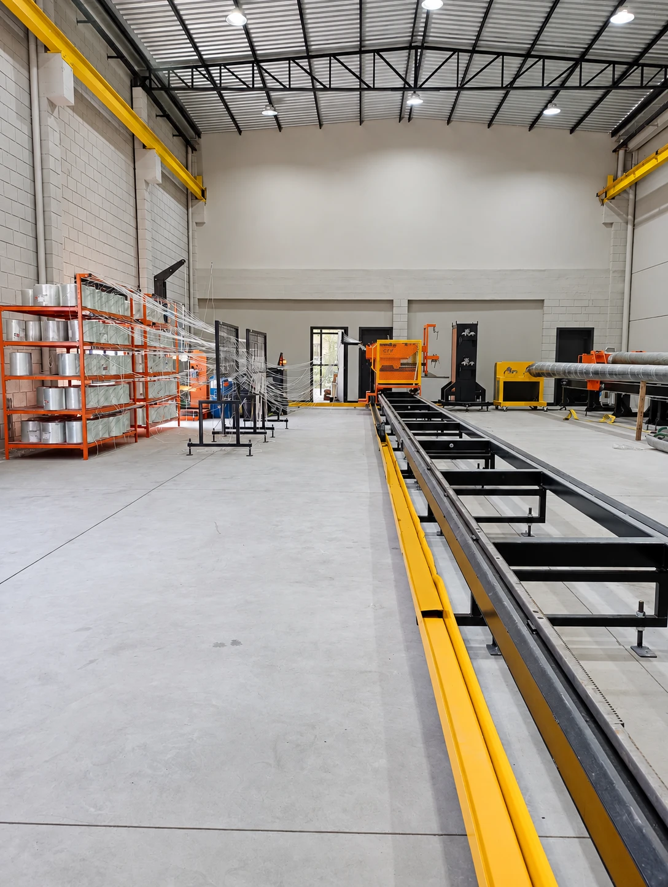
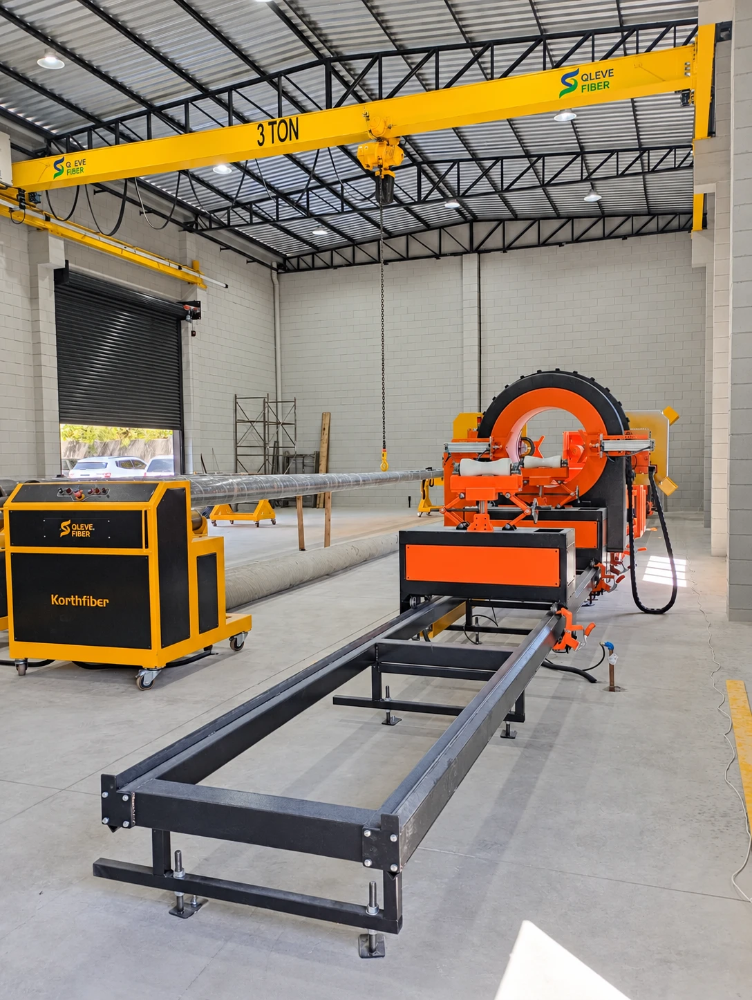

Processo controlado, lote a lote
Do recebimento da resina ao corte final, cada etapa segue procedimento documentado, parâmetros definidos pela engenharia e liberação pela Qualidade.
Enrolamento filamentar em 8 etapas
Fios contínuos de fibra de vidro, impregnados em resina poliéster, são enrolados sobre um mandril em máquina CNC. O ângulo e o número de camadas são definidos pela engenharia para cada modelo.


Ordem de produção
Cada lote parte de ordem liberada com especificação técnica, desenho e cálculo estrutural do modelo.
Preparação do mandril
Limpeza, inspeção, desmoldante, cera de carnaúba e filme de proteção sobre o molde.
Setup do roving
Fios de fibra de vidro alinhados do armário ao carro alimentador e conferidos por checklist.
Programa CNC
Diâmetros, ângulo, camadas e sobreposição programados na enroladeira por comando numérico.
Enrolamento filamentar
Fios impregnados em resina poliéster são depositados em camadas, com reforço na base e no engastamento.
Cura
O conjunto cura apoiado e alinhado, pelo tempo definido para o sistema de resina.
Destacamento
O poste curado é extraído do mandril em equipamento destacador, sem esforço sobre o laminado.
Corte e furação
Corte de base e topo no comprimento nominal, furação e liberação para inspeção e ensaios.
Qualidade construída em cada etapa
Produção conduzida por procedimento documentado, integrado ao Sistema de Gestão da Qleve Fiber.
- Resina verificada a cada lote: laudo do fabricante conferido e corpo de prova testado para catalisação, gel e cura antes de liberar a produção
- Setup liberado pela Qualidade: checklists de roving, mandril e programa aprovados antes de iniciar cada ciclo
- Parâmetros travados: ângulo, camadas, sobreposição e velocidades só mudam com autorização da engenharia
- Rastreabilidade por lote: lotes de resina, catalisador e componentes registrados em cada ordem de produção
- Produto não conforme bloqueado: qualquer desvio interrompe o avanço do poste até avaliação de engenharia e qualidade
- Medição calibrada: instrumentos de aceitação dentro do prazo de calibração definido pela empresa
Ensaios conforme a ABNT NBR 16989:2021
Critérios de aceitação da norma para o poste e para o material.
No poste
| Ensaio | Critério da norma | Laudo |
|---|---|---|
| Inspeção e dimensional | L ±50 mm; seção ±15 mm | a preencher |
| Flexão com carga nominal | Sem fissura; flecha ≤ 10% de L | a preencher |
| Carga excepcional 1,4 × Cn | Flecha residual ≤ 1% de L | a preencher |
| Ruptura 2 × Cn | Não pode romper | a preencher |
| Torção e momento fletor | Sem fissura ou deformação | a preencher |
| Torque M16 | 8 daN sem trinca | a preencher |
No material
| Ensaio | Critério da norma | Laudo |
|---|---|---|
| Envelhecimento UV (2.000 h) | Variação ≤ ±25%; sem fibra exposta | a preencher |
| Flamabilidade (UL 94) | Classificação mínima V-1 | a preencher |
| Propagação de chama | Extinção em até 30 s | a preencher |
| Trilhamento (NBR 10296) | Classe 2A 1,5 kV | a preencher |
| Dureza Barcol | ≥ 30 em todos os pontos | a preencher |
| Absorção de água | NBR 5310, gravimétrico | a preencher |
Cn = carga nominal. Os laudos serão anexados à medida que os ensaios forem concluídos.
Precisa de documentação técnica?
Para processos de homologação e licitação, solicite ficha técnica e laudos disponíveis.